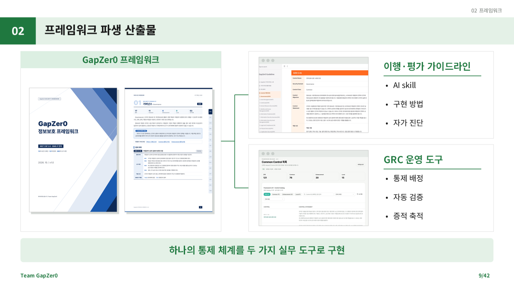

GapZer0
PM으로 NIST CSF 2.0과 ISMS-P 검토 기준을 조율하고 GRC 카탈로그를 정리했습니다. 팀은 15개 도메인의 통제 121개를 설계하고 가상기업에서 운영 통제 203건을 점검했습니다.
GapZer0 프로젝트 자료 ›
홍석현 · 보안과 소프트웨어
중앙대학교 소프트웨어학부에서 보안 기준을 실제 시스템의 점검 절차로 옮기는 일을 공부합니다. GapZer0에서는 보안 통제 관리 프로젝트를, Uni-D에서는 대학 연합 해커톤과 데이터톤을 이끌었습니다.
⌄보안 기준을 점검하는 시스템부터 일상에서 사용하는 앱까지

PM으로 NIST CSF 2.0과 ISMS-P 검토 기준을 조율하고 GRC 카탈로그를 정리했습니다. 팀은 15개 도메인의 통제 121개를 설계하고 가상기업에서 운영 통제 203건을 점검했습니다.
GapZer0 프로젝트 자료 ›사용자 설문을 설계하고 K-means로 커피 취향을 분류했습니다. 레시피 생성·수정 로직을 맡아 3인 팀이 머신·서버·앱을 연결하고 맛 평가와 추출 농도를 기록했습니다.
담당 역할과 구현 ›날씨와 사용자의 옷장을 함께 고려하는 추천 앱입니다. Figma로 화면 흐름을 설계하고 Kotlin 프런트엔드를 맡아 기상청·서버 API를 연결했습니다.
앱 개발 과정 ›팀을 이끌고 운영 결과를 기록한 경험
일정과 의사결정, 프레임워크 정리와 발표 자료 취합을 맡았습니다. 팀 공저 연구로 CISC-W 2026 논문 채택과 한국융합보안학회 추계학술대회 우수논문상을 받았습니다.
8개 대학 참가자 132명의 행사를 총괄했습니다. 해커톤 15팀이 결과물을 제출했고 데이터톤 17팀이 최종 심사에 참여했습니다.
트랙별 운영 결과 →제51대 문화부장으로 행사별 기획·결산과 인수인계를 정리했습니다. 제54대 부학생회장으로 학부 사업과 학생총회 운영에 참여했습니다.
자료구조·운영체제·소프트웨어보안에서 모바일 앱과 캡스톤디자인으로 전공을 넓혔습니다. 2023.12–2025.06에는 KATUSA로 복무했습니다.
보안 실습, 교육, 자격을 확인할 수 있는 기록
시스템 해킹과 기초 암호학을 공부했습니다. All in Kali Linux에서는 개인 분석 보고서를 제출했고, CTF Lab에서는 객체 단위 접근권한 검사를 주제로 문제와 해설을 정리했습니다.
보고서 제출 기록 →WhiteHat School에서 패킷 처리와 시큐어코딩 과제를 구현했습니다. Skills2Work Seoul과 Knights Frontier에서는 데이터센터 보안, CodeQL, BAS·Elastic SIEM 사례를 공부했습니다.
패킷 프로그래밍 과제 →
리눅스마스터 2급 · 2025.03.28
네트워크관리사 2급 · 2025.04.08
대한상공회의소 한자 4급 · 2023.07.28